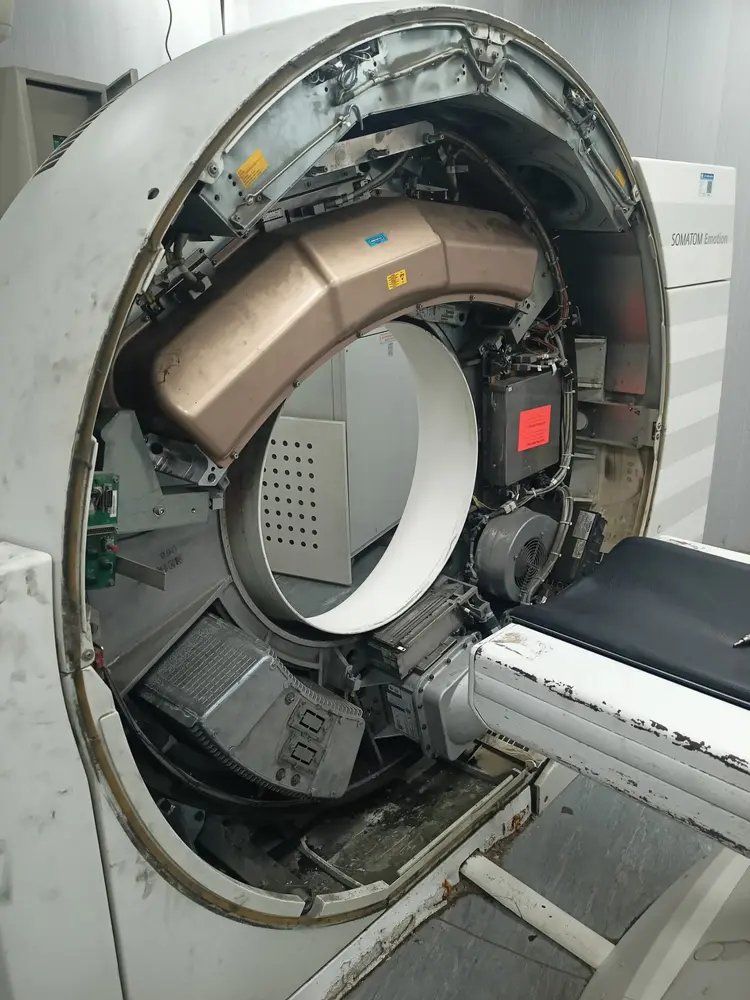
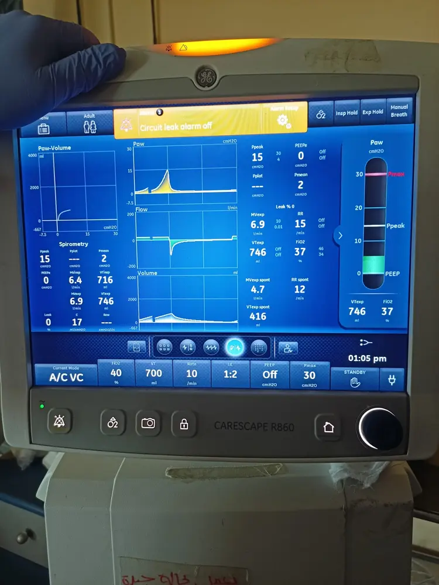
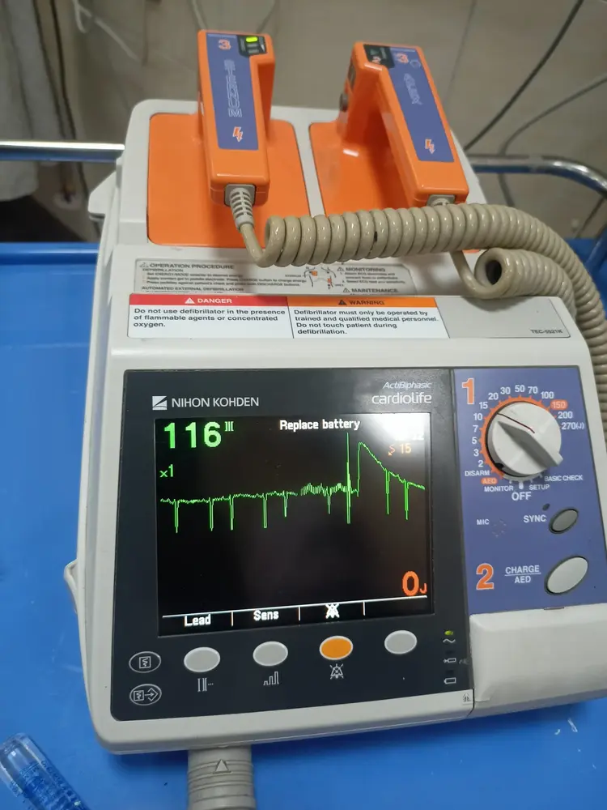
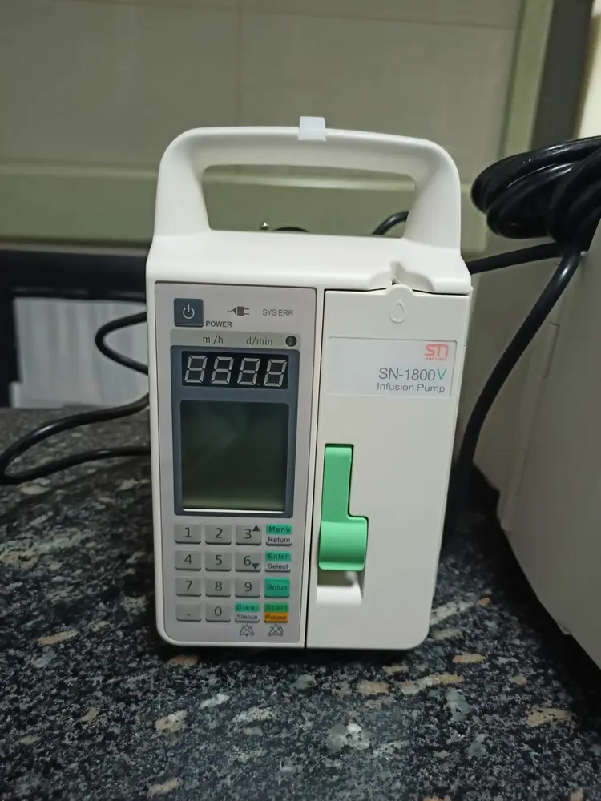

01
Clinical systems
Supervised experience across critical-care, surgical, imaging, and radiography environments.
- Inspection & functional checks
- Preventive-maintenance support
- Fault investigation & documentation
Biomedical engineering × healthcare intelligence
I’m Aboubakr Ibrahim — a biomedical engineer connecting clinical equipment, medical-device quality, and responsible healthcare data research.
Professional profile
I work where equipment reliability, quality systems, and healthcare data meet. That combination lets me understand both the device in front of the patient and the information flowing through it.
Supervised experience across critical-care, surgical, imaging, and radiography environments.
Reproducible MATLAB research spanning ICU data, ECG, HRV, QRS detection, and STFT workflows.
Training in ISO 13485, internal auditing, electrical safety, QMS, CAPA, and device QA.
“I went in thinking my job was to fix devices. I came out understanding something deeper: every calibration, sensor test, and maintenance report represents a patient depending on it.”
Documented engineering experience
Evidence-backed internship experience in Egypt and Türkiye, described with the right boundary: assisted, supported, participated, and learned under engineering supervision.
Hospital-based experience across ICU, CCU, emergency, operating-room, and imaging departments.
Technical-service experience focused on X-ray equipment, radiography principles, hospital visits, and service workflows.
Selected field evidence
Privacy-screened photographs from supervised internship activities. They document equipment exposure and learning context; they do not imply independent clinical authorization or manufacturer certification.





Technical portfolio
Each repository separates demonstrated implementation from unverified performance. The goal is credible engineering evidence—not impressive numbers without methodological support.
A repaired first-24-hour research framework for admission-level sepsis risk exploration, with diagnosis-derived labels, patient-level validation, training-only preprocessing, and transparent limitations.
Pan–Tompkins-style and wavelet detectors with one-to-one annotation matching, tolerance-aware evaluation, and record-level summaries.
Artifact-aware RR handling, time and frequency metrics, Poincaré analysis, batch reporting, and five-minute frequency safeguards.
Recording-separated CNN mask estimation, exact-length ISTFT reconstruction, a spectral-subtraction baseline, and QC artifacts.
A 24-hour framework replacing simulated and post-outcome features with patient separation, interpretable baselines, and calibration.
Supporting projects were paid or voluntary MATLAB/research contributions used to expand technical capability. They are not presented as additional graduation projects or clinically validated products.
Quality mindset
My quality training strengthens the way I approach both equipment and data: define the intended use, inspect systematically, document clearly, verify results, and never make claims beyond the evidence.
Medical-device QMSISO 13485 foundations, internal auditing, CAPA, and document control.
Equipment assuranceFunctional checks, electrical-safety awareness, calibration verification, and traceability.
Responsible researchLeakage prevention, privacy, reproducibility, limitations, and reviewed reporting.
Selected credentials
Only the credentials that reinforce my target roles appear prominently. Supporting modules remain available as part of the complete archive.
These credentials broaden the biomedical core without competing visually with ISO 13485, Fluke Biomedical, Scilife, WHO, and McKinsey evidence.
Some credentials use shortened variations of my complete legal name. Credential images are shown as issued and are never edited to change identity information.
Capability map
Aboubakr demonstrated a strong passion for scientific research and technical innovation.
The recommendation further highlights independent work, critical thinking, data interpretation, documentation, presentation, curiosity, and a responsible research foundation.
Professional CV
The website provides the broadest employer-facing CV. Targeted Quality, Biomedical Data, and Technical Sales versions remain available for specific applications rather than creating uncertainty for recruiters.
Medical Device Quality & QMS · Biomedical Data & MATLAB Research · Technical Sales & Clinical Applications
Shared when the vacancy requires a different emphasis.Let’s connect
I’m seeking a humane, professional environment where I can apply my biomedical foundation, grow quickly, and contribute across clinical engineering, field service, quality, applications, or research.